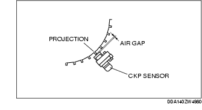
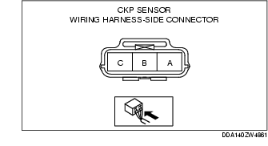
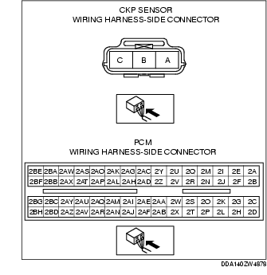

Crankshaft position (CKP) sensor inspection [ZY]
- • Before performing the following inspection, make sure to follow the procedure as indicated in the troubleshooting flowchart. (See Troubleshooting Procedure.)
Visual inspection
1. Remove the CKP sensor. (See CRANKSHAFT POSITION (CKP) SENSOR REMOVAL/INSTALLATION [ZY].)
2. Verify that there are no metal shavings on the sensor.
3. Install the CKP sensor. (See CRANKSHAFT POSITION (CKP) SENSOR REMOVAL/INSTALLATION [ZY].)
Air Gap Inspection
1. Verify that the CKP sensor is securely installed.
2. Using a thickness gauge, measure the air gap between the plate projections at the back of crankshaft pulley and the CKP sensor.

- • If not within the specification, inspect the plate projections for cracks or bending.
- - If not within the specification, replace the plate. (See FRONT OIL SEAL REPLACEMENT [ZY].)
Voltage inspection
1. Idle the engine.
- • Water penetrating the connector will cause sensor malfunction. To prevent this, be careful not to damage the wiring harnesses or the waterproof connector so as to cause water penetration.
2. Measure the output voltage using a oscilloscope.

- • If not within the specification, replace the CKP sensor. (See CRANKSHAFT POSITION (CKP) SENSOR REMOVAL/INSTALLATION [ZY].)
- • If the monitor item condition/specification (reference) is not within the specification, even though there is no malfunction, perform the "Circuit Open/Short Inspection".
- * : Output voltage varies with camshaft rotation.
CKP sensor voltage
Circuit Open/Short Inspection
1. Remove the PCM connector cover.
2. Disconnect the PCM connector. (See INTAKE-AIR SYSTEM REMOVAL/INSTALLATION [ZY].)
3. Inspect the following wiring harness for open or short circuit (Continuity inspection).

Open circuit
- • If there is no continuity, there is an open circuit. Repair or replace the wiring harness.
- - CKP sensor terminal A and PCM terminal 2I
- - CKP sensor terminal B and PCM terminal 2Y
- - CKP sensor terminal C and body ground
Short circuit
- • If there is continuity, there is a short circuit. Repair or replace the wiring harness.
- - CKP sensor terminal A and body GND
- - CKP sensor terminal B and power supply
- - CKP sensor terminal B and body GND
- - CKP sensor terminal C and power supply